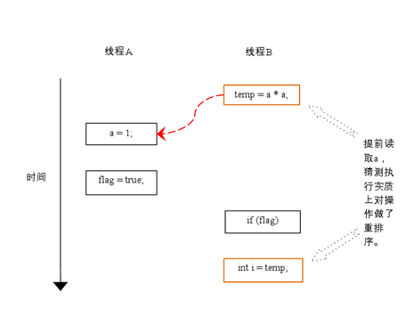

为什么会乱序
现在的CPU一般采用流水线来执行指令。一个指令的执行被分成：取指、译码、访存、执行、写回、等若干个阶段。然后，多条指令可以同时存在于流水线中，同时被执行。
指令流水线并不是串行的，并不会因为一个耗时很长的指令在“执行”阶段呆很长时间，而导致后续的指令都卡在“执行”之前的阶段上。
相反，流水线是并行的，多个指令可以同时处于同一个阶段，只要CPU内部相应的处理部件未被占满即可。比如说CPU有一个加法器和一个除法器，那么一条加法指令和一条除法指令就可能同时处于“执行”阶段, 而两条加法指令在“执行”阶段就只能串行工作。
相比于串行+阻塞的方式，流水线像这样并行的工作，效率是非常高的。
然而，这样一来，乱序可能就产生了。比如一条加法指令原本出现在一条除法指令的后面，但是由于除法的执行时间很长，在它执行完之前，加法可能先执行完了。再比如两条访存指令，可能由于第二条指令命中了cache而导致它先于第一条指令完成。
一般情况下，指令乱序并不是CPU在执行指令之前刻意去调整顺序。CPU总是顺序的去内存里面取指令，然后将其顺序的放入指令流水线。但是指令执行时的各种条件，指令与指令之间的相互影响，可能导致顺序放入流水线的指令，最终乱序执行完成。这就是所谓的“顺序流入，乱序流出”。
指令流水线除了在资源不足的情况下会卡住之外（如前所述的一个加法器应付两条加法指令的情况），指令之间的相关性也是导致流水线阻塞的重要原因。
CPU的乱序执行并不是任意的乱序，而是以保证程序上下文因果关系为前提的。有了这个前提，CPU执行的正确性才有保证。比如：
a++; b=f(a); c--;
由于b=f(a)这条指令依赖于前一条指令a++的执行结果，所以b=f(a)将在“执行”阶段之前被阻塞，直到a++的执行结果被生成出来；而c--跟前面没有依赖，它可能在b=f(a)之前就能执行完。（注意，这里的f(a)并不代表一个以a为参数的函数调用，而是代表以a为操作数的指令。C语言的函数调用是需要若干条指令才能实现的，情况要更复杂些。）
像这样有依赖关系的指令如果挨得很近，后一条指令必定会因为等待前一条执行的结果，而在流水线中阻塞很久，占用流水线的资源。而编译器的乱序，作为编译优化的一种手段，则试图通过指令重排将这样的两条指令拉开距离, 以至于后一条指令进入CPU的时候，前一条指令结果已经得到了，那么也就不再需要阻塞等待了。比如将指令重排为：
a++; c--; b=f(a);
相比于CPU的乱序，编译器的乱序才是真正对指令顺序做了调整。但是编译器的乱序也必须保证程序上下文的因果关系不发生改变。
乱序的后果
乱序执行，有了“保证上下文因果关系”这一前提，一般情况下是不会有问题的。因此，在绝大多数情况下，我们写程序都不会去考虑乱序所带来的影响。
但是，有些程序逻辑，单纯从上下文是看不出它们的因果关系的。比如：
*addr=5; val=*data;
从表面上看，addr和data是没有什么联系的，完全可以放心的去乱序执行。但是如果这是在某某设备驱动程序中，这两个变量却可能对应到设备的地址端口和数据端口。并且，这个设备规定了，当你需要读写设备上的某个寄存器时，先将寄存器编号设置到地址端口，然后就可以通过对数据端口的读写而操作到对应的寄存器。那么这么一来，对前面那两条指令的乱序执行就可能造成错误。
对于这样的逻辑，我们姑且将其称作隐式的因果关系；而指令与指令之间直接的输入输出依赖，也姑且称作显式的因果关系。CPU或者编译器的乱序是以保持显式的因果关系不变为前提的，但是它们都无法识别隐式的因果关系。再举个例子：
obj->data = xxx; obj->ready = 1;
当设置了data之后，记下标志，然后在另一个线程中可能执行：
if (obj->ready) do_something(obj->data);
虽然这个代码看上去有些别扭，但是似乎没错。不过，考虑到乱序，如果标志被置位先于data被设置，那么结果很可能就杯具了。因为从字面上看，前面的那两条指令其实并不存在显式的因果关系，乱序是有可能发生的。
总的来说，如果程序具有显式的因果关系的话，乱序一定会尊重这些关系；否则，乱序就可能打破程序原有的逻辑。这时候，就需要使用屏障来抑制乱序，以维持程序所期望的逻辑。
屏障的作用
内存屏障主要有：读屏障、写屏障、通用屏障、优化屏障、几种。
以读屏障为例，它用于保证读操作有序。屏障之前的读操作一定会先于屏障之后的读操作完成，写操作不受影响，同属于屏障的某一侧的读操作也不受影响。类似的，写屏障用于限制写操作。而通用屏障则对读写操作都有作用。而优化屏障则用于限制编译器的指令重排，不区分读写。前三种屏障都隐含了优化屏障的功能。比如：
tmp = ttt; *addr = 5; mb(); val = *data;
有了内存屏障就了确保先设置地址端口，再读数据端口。而至于设置地址端口与tmp的赋值孰先孰后，屏障则不做干预。
有了内存屏障，就可以在隐式因果关系的场景中，保证因果关系逻辑正确。
重排序通常是编译器或运行时环境为了优化程序性能而采取的对指令进行重新排序执行的一种手段。重排序分为两类：编译期重排序和运行期重排序，分别对应编译时和运行时环境。
在并发程序中，程序员会特别关注不同进程或线程之间的数据同步，特别是多个线程同时修改同一变量时，必须采取可靠的同步或其它措施保障数据被正确地修改，这里的一条重要原则是：不要假设指令执行的顺序，你无法预知不同线程之间的指令会以何种顺序执行。
但是在单线程程序中，通常我们容易假设指令是顺序执行的，否则可以想象程序会发生什么可怕的变化。理想的模型是：各种指令执行的顺序是唯一且有序的，这个顺序就是它们被编写在代码中的顺序，与处理器或其它因素无关，这种模型被称作顺序一致性模型，也是基于冯·诺依曼体系的模型。当然，这种假设本身是合理的，在实践中也鲜有异常发生，但事实上，没有哪个现代多处理器架构会采用这种模型，因为它是在是太低效了。而在编译优化和CPU流水线中，几乎都涉及到指令重排序。
一、编译期重排序
编译期重排序的典型就是通过调整指令顺序，在不改变程序语义的前提下，尽可能减少寄存器的读取、存储次数，充分复用寄存器的存储值。
假设第一条指令计算一个值赋给变量A并存放在寄存器中，第二条指令与A无关但需要占用寄存器（假设它将占用A所在的那个寄存器），第三条指令使用A的值且与第二条指令无关。那么如果按照顺序一致性模型，A在第一条指令执行过后被放入寄存器，在第二条指令执行时A不再存在，第三条指令执行时A重新被读入寄存器，而这个过程中，A的值没有发生变化。通常编译器都会交换第二和第三条指令的位置，这样第一条指令结束时A存在于寄存器中，接下来可以直接从寄存器中读取A的值，降低了重复读取的开销。
二、重排序对于流水线的意义
现代CPU几乎都采用流水线机制加快指令的处理速度，一般来说，一条指令需要若干个CPU时钟周期处理，而通过流水线并行执行，可以在同等的时钟周期内执行若干条指令，具体做法简单地说就是把指令分为不同的执行周期，例如读取、寻址、解析、执行等步骤，并放在不同的元件中处理，同时在执行单元EU中，功能单元被分为不同的元件，例如加法元件、乘法元件、加载元件、存储元件等，可以进一步实现不同的计算并行执行。
流水线架构决定了指令应该被并行执行，而不是在顺序化模型中所认为的那样。重排序有利于充分使用流水线，进而达到超标量的效果。
三、确保顺序性
尽管指令在执行时并不一定按照我们所编写的顺序执行，但毋庸置疑的是，在单线程环境下，指令执行的最终效果应当与其在顺序执行下的效果一致，否则这种优化便会失去意义。
通常无论是在编译期还是运行期进行的指令重排序，都会满足上面的原则。
四、Java存储模型中的重排序
在Java存储模型（Java Memory Model, JMM）中，重排序是十分重要的一节，特别是在并发编程中。JMM通过happens-before法则保证顺序执行语义，如果想要让执行操作B的线程观察到执行操作A的线程的结果，那么A和B就必须满足happens-before原则，否则，JVM可以对它们进行任意排序以提高程序性能。
volatile关键字可以保证变量的可见性，因为对volatile的操作都在Main Memory中，而Main Memory是被所有线程所共享的，这里的代价就是牺牲了性能，无法利用寄存器或Cache，因为它们都不是全局的，无法保证可见性，可能产生脏读。
volatile还有一个作用就是局部阻止重排序的发生，对volatile变量的操作指令都不会被重排序，因为如果重排序，又可能产生可见性问题。
在保证可见性方面，锁（包括显式锁、对象锁）以及对原子变量的读写都可以确保变量的可见性。但是实现方式略有不同，例如同步锁保证得到锁时从内存里重新读入数据刷新缓存，释放锁时将数据写回内存以保数据可见，而volatile变量干脆都是读写内存。
Happens-before法则
Java存储模型有一个happens-before原则，就是如果动作B要看到动作A的执行结果（无论A/B是否在同一个线程里面执行），那么A/B就需要满足happens-before关系。
在介绍happens-before法则之前介绍一个概念：JMM动作（Java Memeory Model Action），Java存储模型动作。一个动作（Action）包括：变量的读写、监视器加锁和释放锁、线程的start()和join()。后面还会提到锁的的。
happens-before完整规则：
（1）同一个线程中的每个Action都happens-before于出现在其后的任何一个Action。
（2）对一个监视器的解锁happens-before于每一个后续对同一个监视器的加锁。
（3）对volatile字段的写入操作happens-before于每一个后续的同一个字段的读操作。
（4）Thread.start()的调用会happens-before于启动线程里面的动作。
（5）Thread中的所有动作都happens-before于其他线程检查到此线程结束或者Thread.join（）中返回或者Thread.isAlive()==false。
（6）一个线程A调用另一个另一个线程B的interrupt（）都happens-before于线程A发现B被A中断（B抛出异常或者A检测到B的isInterrupted（）或者interrupted()）。
（7）一个对象构造函数的结束happens-before与该对象的finalizer的开始
（8）如果A动作happens-before于B动作，而B动作happens-before与C动作，那么A动作happens-before于C动作。
五、首先为何要指令重排序实例（instruction reordering）？
编译器或运行时环境为了优化程序性能而采取的对指令进行重新排序执行的一种手段。
也就是说，对于下面两条语句：
int a = 10;
int b = 20;
在计算机执行上面两句话的时候，有可能第二条语句会先于第一条语句执行。所以，千万不要随意假设指令执行的顺序。
六、是不是所有的语句的执行顺序都可以重排呢？
答案是否定的。为了讲清楚这个问题，先讲解另一个概念：数据依赖性
6.1、什么是数据依赖性
如果两个操作访问同一个变量，且这两个操作中有一个为写操作，此时这两个操作之间就存在数据依赖。数据依赖分下列三种类型：
| 名称 |
代码示例 |
说明 |
| 写后读 |
a = 1;b = a; |
写一个变量之后，再读这个位置。 |
| 写后写 |
a = 1;a = 2; |
写一个变量之后，再写这个变量。 |
| 读后写 |
a = b;b = 1; |
读一个变量之后，再写这个变量。 |
上面三种情况，只要重排序两个操作的执行顺序，程序的执行结果将会被改变。所以，编译器和处理器在重排序时，会遵守数据依赖性，编译器和处理器不会改变存在数据依赖关系的两个操作的执行顺序。也就是说：在单线程环境下，指令执行的最终效果应当与其在顺序执行下的效果一致，否则这种优化便会失去意义。这句话有个专业术语叫做as-if-serial
semantics (as-if-serial语义)
七、重排序对多线程的影响
现在让我们来看看，重排序是否会改变多线程程序的执行结果。请看下面的示例代码：
-
class ReorderExample {
-
int a = 0;
-
boolean flag = false;
-
-
public void writer() {
-
a = 1;
-
flag = true;
-
}
-
-
public void reader() {
-
if (flag) {
-
int i = a * a;
-
}
-
}
-
}
flag变量是个标记，用来标识变量a是否已被写入。这里假设有两个线程A和B，A首先执行writer()方法，随后B线程接着执行reader()方法。线程B在执行操作4时，能否看到线程A在操作1对共享变量a的写入？
答案是：不一定能看到。
由于操作1和操作2没有数据依赖关系，编译器和处理器可以对这两个操作重排序；同样，操作3和操作4没有数据依赖关系，编译器和处理器也可以对这两个操作重排序。让我们先来看看，当操作1和操作2重排序时，可能会产生什么效果？请看下面的程序执行时序图：

上图的执行顺序是：2 -> 3 -> 4 -> 1 (这是完全存在并且合理的一种顺序，如果你不能理解，请先了解CPU是如何对多个线程进行时间分配的)
如上图所示，操作1和操作2做了重排序。程序执行时，线程A首先写标记变量flag，随后线程B读这个变量。由于条件判断为真，线程B将读取变量a。此时，变量a还根本没有被线程A写入，在这里多线程程序的语义被重排序破坏了！
下面再让我们看看，当操作3和操作4重排序时会产生什么效果。下面是操作3和操作4重排序后，程序的执行时序图：

在程序中，操作3和操作4存在控制依赖关系。当代码中存在控制依赖性时，会影响指令序列执行的并行度。为此，编译器和处理器会采用猜测（Speculation）执行来克服控制相关性对并行度的影响。以处理器的猜测执行为例，执行线程B的处理器可以提前读取并计算a*a，然后把计算结果临时保存到一个名为重排序缓冲（reorder buffer ROB）的硬件缓存中。当接下来操作3的条件判断为真时，就把该计算结果写入变量i中。
从图中我们可以看出，猜测执行实质上对操作3和4做了重排序。重排序在这里破坏了多线程程序的语义！
在单线程程序中，对存在控制依赖的操作重排序，不会改变执行结果（这也是as-if-serial语义允许对存在控制依赖的操作做重排序的原因）；但在多线程程序中，对存在控制依赖的操作重排序，可能会改变程序的执行结果。
为什么volatile禁止CPU指令的重排序
class VolatileExample {
int x = 0;
volatile boolean v = false;
//in thread A
public void writer() {
x = 42;
v = true;
}
//in thread B
public void reader() {
if (v == true) {
//uses x - can we see x is 42?
}
}
}
在这种情况下，当thread A 执行完后，在thread B中能看到x等于42吗？（变量v肯定可以看到，根据可见性可以推断出来） 好吧，在旧的JMM模型下，答案是不一定。原因就是CPU指令在执行时的重排序。在旧的JMM模型下，只规定了volatile变量和volatile变量之间不能进行重排序，但是并没有保证volatile变量和non-volatile变量之间不能进行重排序，所以， 当在thread A中，指令的执行可能是：
这样，当thread B 看到v为true的时候，x实际上还没有执行，所以值不是42.
慢！眼尖的同学可能看出来了， 你说的这个跟重排序实际上没有关系呀，这个应该算是变量x的可见性问题，因为变量x不是声明为volatile的。
好吧，我承认我偷懒了，在描述volatile变量可见性特质的时候，在新的JMM模型下，当对volatile变量进行写的时候，该线程（这里是thread A）所能看到变量（比如说变量x），都会一起刷新到主存中。这个也就是为什么我们会说对volatile变量的写操作，实际上等价于使用了synchronized关键字后释放monitor时产生的效果。 在这个前提下，上面的问题的确是CPU指令重排序的问题。
但是幸运的是，JMM随后提出了happen-before原则来fix了这个问题（主要是volitale变量和non-volatile变量之间的重排序问题。）
这里我只挑跟这个问题相关的三条原则来进行讲解，其余的可以到官方文档去查看。
1. 单线程原则， 在单线程执行的环境下，指令的执行是跟程序代码的执行顺序一致。 对于上面的例子来说，在程序代码顺序上，x=42 先于 v=true， 那么在内存指令执行的时候也是如此。
2. volatile变量原则，对volatile变量的写操作要优先于对volatile变量的读操作。
3. 转递性原则，如果A操作先于B操作，B操作先于C操作，那么A操作肯定先于C操作。
还是上面的例子，先用单线程原则，可以判断出，在thread A的执行中， x=42肯定要优先于v=true进行执行， 而在thread B的执行中，对v的读取操作肯定要优先于对x的使用操作。
接着再使用volatile变量原则，可以判断，对v的写肯定要先于对v的读， 最后再根据转递性原则， 可以推出在thread A中x=42的赋值操作肯定要先于thread B中对x的使用， 也就是说，当v读取出来是为true的时候，x肯定是42. 指令不会进行重排序。
参考：
http://blog.csdn.net/beiyetengqing/article/details/49580559
http://blog.hesey.net/2011/07/reordering.html
http://www.iteye.com/problems/78031